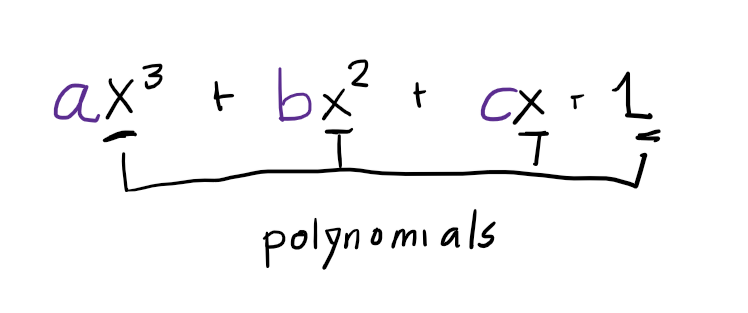
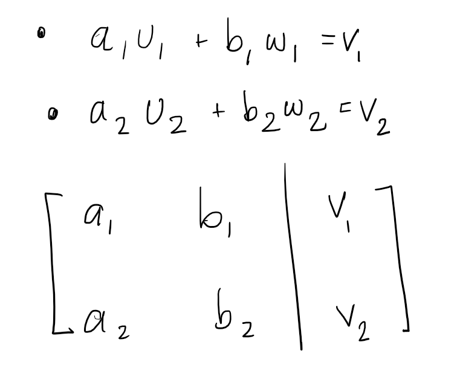

Span and Linear Dependence
Span and Linear Dependence
Understanding span and linear dependence are foundational to a mastery of linear algebra and finite dimensional vector spaces.
To build up to these notions I will first define what a linear combination in in math language and in Python to provide an unambiguous example.
Linear Combinations
What does the mathematical definition say?
- a linear combination (or linear span) of a list of vectors, $(v_1, \dots v_m)$, is itself a vector of the form $a_1v_1 + \dots, + a_mv_m$ where $a_1, \dots, a_m$ are in the field $F$.
Specify an example using Python logic:
If I wanted to express the same idea in Python with a finite example, I would write:
import numpy as np
import pdb
import math
# three vectors from R**2
v_1 = np.array([2,3])
v_2 = np.array([5,7])
# v_2 = [5,7]
# print(v_2 * 7)
# Look out - don't do this (don't set )! will just make multiple copies of your list.
v_3 = np.array([9,11])
# three scalars from R
a_1, a_2, a_3 = 1,2,3
vectors = [v_1, v_2, v_3]
scalars = [a_1, a_2, a_3]
linear_combination_terms = []
for vec_index in range(len(vectors)):
linear_combination_terms.append(vectors[vec_index] * scalars[vec_index]) # compute terms in order
# then a linear combination of v_1, v_2, v_3 with a_1, a_2, and a_3 is:
linear_combination = sum(linear_combination_terms) # add them all together
# this could have been done in the for loop but better for clarity done here
print(linear_combination)
Generalization
You can generalize the definition of a linear combination to vectors of any vector space.
For example, note that from the definition, you can form linear combinations of polynomials and matrices, like so:

Since $x^3, x^2, x, 1$ are all polynomials, this is also a linear combination of polynomials.
Can I Tell if $v$ is a linear combination of $u$ and $w$?
How can I tell if a vector is a linear combination of another list of vectors?
Determine if the system of equations representing the vectors has a solution
Then the question becomes: can you specify an algorithm for this? Can we write it down? In mathematical language? What about in code?
You can “cheat” at first and just tell whether a vector is a linear combination of other vectors with some mental math.
You need a general way to do this however, and the way to do this pops out at you as the matrix formed by the equation $ v = au + bw $

Then the task is easy. If the system has no solutions, $v$ is not a linear combination of $u,w$.
Span
Then the definition of span becomes straightforward.
The span of set of vectors is the set of all linear combinations of those vectors.